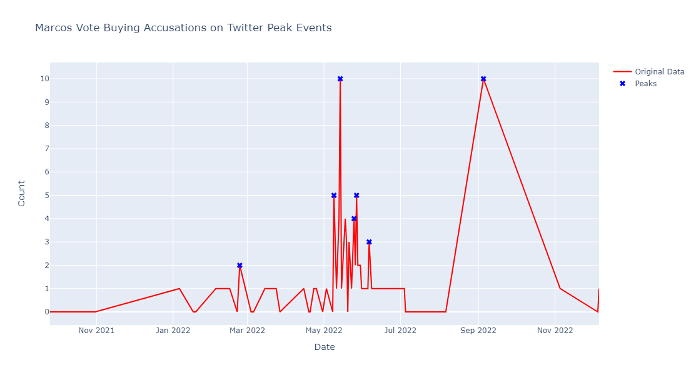

Vote buying is a malpractice in which a candidate, or their supporters, offer incentives (i.e. money, goods) to voters in exchange for their vote. According to an article published by PhilStar, Filipino voters have had no trouble accepting money from candidates during election seasons. However, the Commission on Elections (COMELEC) has made it clear that this is a serious offense and violators will be arrested. During the 2022 elections, candidates and their teams took to social media to expand the reaches of their campaigning. As such, supporters of candidates would often take this opportunity to slander other candidates. Some accusations these supporters hurl involve calling out the opposition for engaging in vote-buying.
What percent of tweets regarding vote-buying allegations are targeted towards former Vice President Leni Robredo?
More than 50% of vote-buying allegations on Twitter are about former Vice President Leni Robredo.
There's no majority (more than 50%) of allegations going to a specific candidate
Collect all tweets about vote-buying and filter out the tweets by their targeted candidate.
The official start and end of the 2022 Philippine election period as presecribed by the COMELEC was from January 9 to June 8, 2022. Vote buying is among the many prohibited acts during the election period. (See here)
In this section of our portfolio, we will discuss what we did to explore the 151 data that we've collected and how we made sure that they are clean and appropriate for our research objectives.

Once again, our topic is about tweets about vote buying allegations about the top 3 presidential candidates in the 2022 Philippine Elections.

The keywords we used to scrape tweets are as follows: Vote buying, vote-buying, Bumibili ng Boto, Bumili ng Boto, Leki, Pacquiao, and BBM. In no specific order.

For scraping tweets we used Apify. It is a web scraping and automation platform that provides tools for extracting data from websites, in our case Twitter.


Some columns during our data collection had missing data. After some careful discussion, we concluded that some of these columns were not relevant to our study hence we decided to remove some of them. The remaining columns that were relevant to our study, had no missing values.

Upon inspection of our data, we discovered that formats involving time and date were not constant. This was going to be a problem in the future when conducting statistical analysis. We manually went through our dataset and corrected the format to better suit our needs.

One thing we did with our data was to identify which presidential candidate was being accussed of allegations of vote buying in the tweet. We decided to use categorical data encoding for each tweet assigning the tweet to be either about Robredo, Marcos, Pacquiao, or a mix of any of the three.

Another column we encoded into categorical data was the content type. Whether the content of the tweet is considered Rational or Emotional.

Other columns that we switched into categorical data encoding were: Tweet Type, Account Type, and Rating.
In order to determine if there were any outliers in our data, we used the date posted as the column index. After obtaining their mean and standard deviation, we were able to tabulate the z-scores of every date in the data. Through this we were able to discover 1 outlier data. This row was then removed and not replaced since we had a surplus of data collected during the initial collection.


During this process, we had to translate the tweets first into English. We used googletrans to translate the tweets into English. If we found the translation to be inappropriate or inaccurate, we manually translated the tweet ourselves. The tweets were then lowercased and had the punctuation marks removed. Afterwards, it was then tokenized with the NLTK Python library using its tokenize module.

To cater for future interest in text analysis, we deemed it necessary to reduce the number of vocabulary in the tweets. After the previous step, we then used the NLTK library for its PorterStemmer and WordNetLemmatizer modules to be able to reduce the words back to their base or root forms. One benefit of this is that this simplification can improve the efficiency of text processing tasks and reduce the computational resources required if we wish to pursue an in-depth text analysis of the tweets collected.
The purpose of time series analysis is to understand insights from data that is collected over time. In our topic, since we are using categorical data, we opted to use the Binning method. With a binning interval of 1 month, we were able to observe and analyze long-term trends over time. This was done by ensuring that the Date posted column was converted to the datetime Python format. After that, making us of Pandas, we were able to create a new data frame with the binned time series analysis assigning it a bin size of 1M or 1 Month. Finally using the pd.Grouper function from the Pandas library to specify the grouping frequency for the time series data, we came up with the results below. Which we then tabulated into a graph manually.

The plot presents that most of the tweets collected accussed Marcos (85 tweets). Then, Robredo (48 tweets). Lastly, Pacquiao had the least amount (18 tweets).
The plot visualizes the distribution of the content type of the collected tweets. We can observe that majority of the collected tweets are Rational (89 tweets). On the other hand, collected tweets that are Emotional only amount to 73 tweets.

The plot visualizes the breakdown of the content type of the collected tweets among the Candidates.
For Robredo, we can see that majority of the collected tweets accusing the candidate are Emotional tweets (30 tweets).
On the other hand, collected tweets that are Rational and accusing the candidate only amount to 22 tweets.
For Marcos, we can see that majority of the collected tweets accusing the candidate are Rational tweets (51 tweets).
On the other hand, collected tweets that are Rational and accusing the candidate only amount to 42 tweets.
For Pacquiao, we can see that majority of the collected tweets accusing the candidate are Rational tweets (17 tweets).
On the other hand, collected tweets that are Rational and accusing the candidate only amount to 2 tweets.
Majority of the collected tweets came from anonymous accounts (131).
For tweets alleging Robredo of vote buying, 46 came from anonymous accounts.
For tweets alleging Marcos of vote buying, 69 came from anonymous accounts.
For tweets alleging Robredo of vote buying, 15 came from anonymous accounts.
The plot visualizes the growth of the number of tweets accusing a candidate over the *time.
It is not technically over time since the x-axis is the order in which the tweet is posted (the tweets are chronologically ordered then labelled incrementally in ascending order).
We can see that tweets accusing Marcos has the highest growth rate among the three candidates.
On the other hand, Pacquiao has the least. This can be attributed to the lack of tweets collected that accused Pacquiao of vote buying or the data collected is not large enough.
The plot visualizes the growth of the number of tweets of a certain Content Type over *time.
It is not technically over time since the x-axis is the order in which the tweet is posted (the tweets are chronologically ordered then labelled incrementally in ascending order).
We can see that the tweets that are Rational has a greater growth rate than the tweets that are emotional.
Proin odio consequat sapien vestibulum consequat lorem dolore feugiat.

Ornare nulla proin odio consequat.

Ornare nulla proin odio consequat.